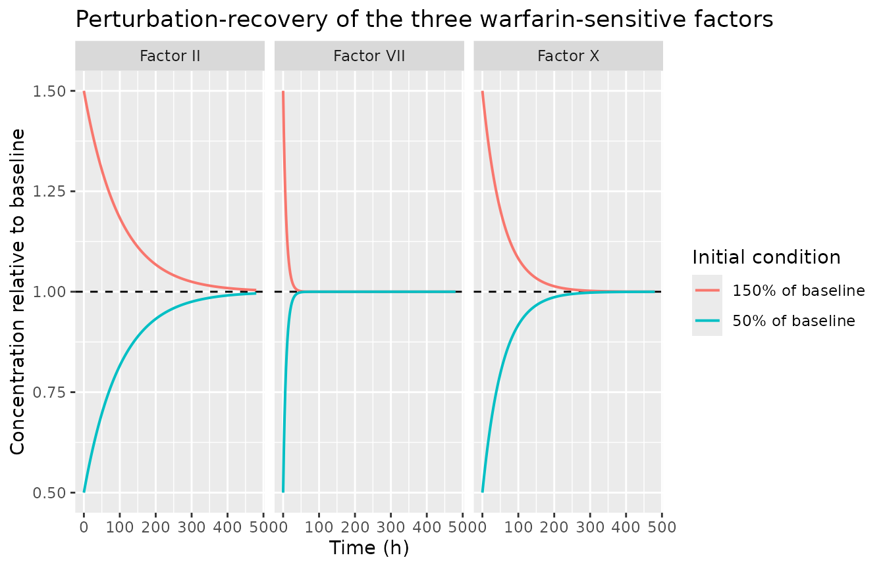
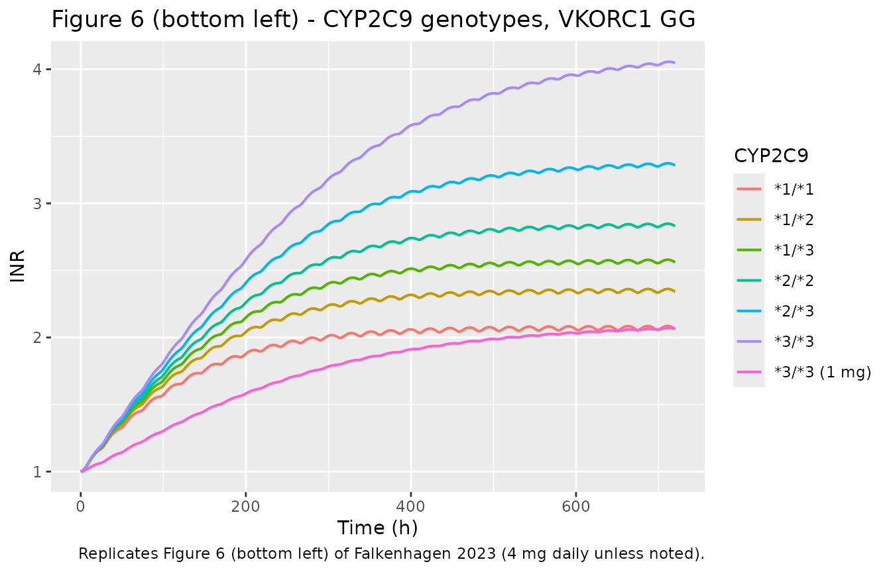
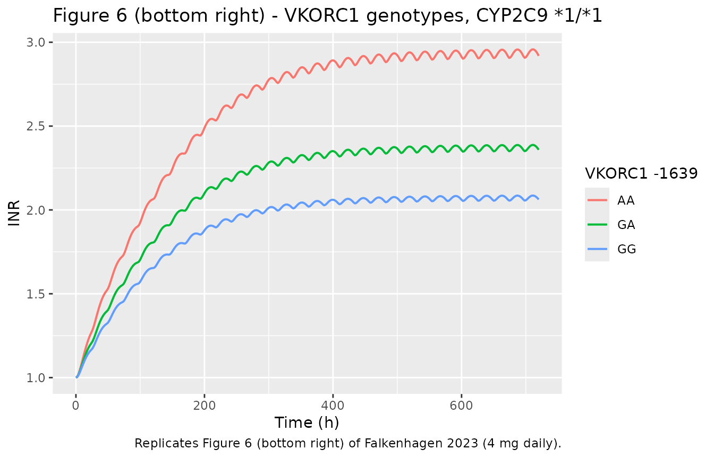
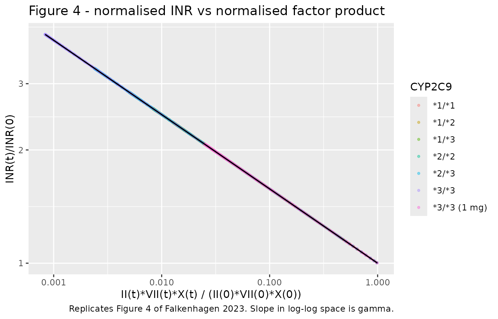
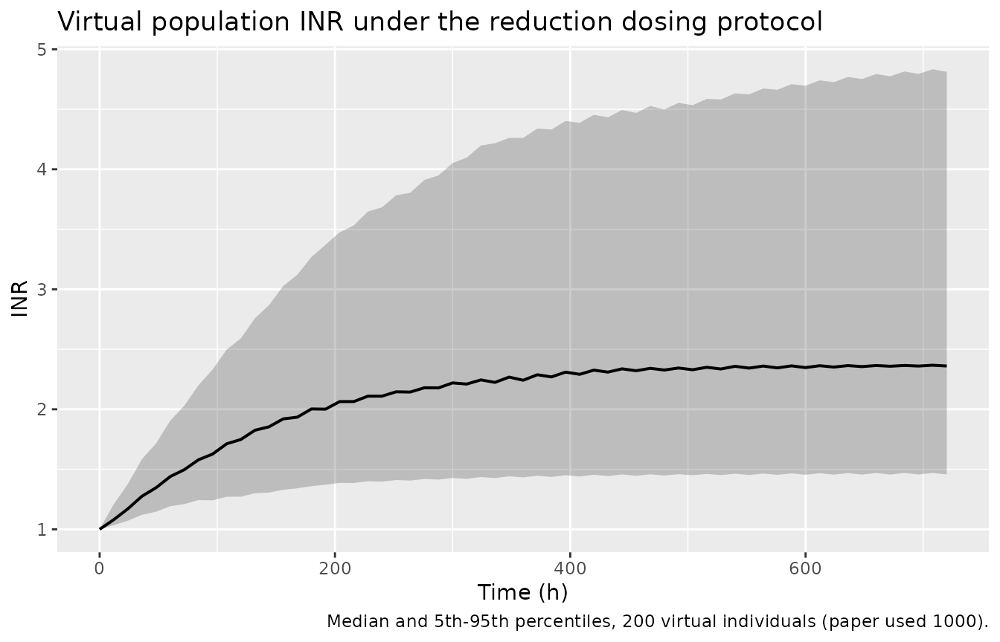

Warfarin/INR from QSP model reduction (Falkenhagen 2023)
Source:vignettes/articles/Falkenhagen_2023_warfarin_qsp.Rmd
Falkenhagen_2023_warfarin_qsp.RmdModel and source
- Citation: Falkenhagen U, Knoechel J, Kloft C, Huisinga W. Deriving mechanism-based pharmacodynamic models by reducing quantitative systems pharmacology models: An application to warfarin. CPT Pharmacometrics Syst Pharmacol. 2023;12(4):432-443. doi:10.1002/psp4.12903. Reduced in vivo ODE system from Supplementary Material Section S5 (Eqs S27-S29); INR power law from Equation (13); genotype parameters from Supplementary Table S1; steady-state parameter interdependencies from Supplementary Material Section S2 (Eq S3). Numeric values of the reference parameterization are inherited from the underlying QSP model: Wajima T, Isbister GK, Duffull SB. A comprehensive model for the humoral coagulation network in humans. Clin Pharmacol Ther. 2009;86(3):290-298. doi:10.1038/clpt.2009.87, as implemented in the authors’ own supplemental code archive doi:10.5281/zenodo.7417886.
- Description: QSP-derived mechanism-based warfarin/INR pharmacodynamic model (Falkenhagen 2023). Obtained by systematically reducing the 62-ODE / 174-parameter Wajima 2009 blood-coagulation quantitative systems pharmacology model down to 6 ODEs and 11 structural parameters, while guaranteeing under 10% relative INR error for at least 95% of a diverse virtual population. One-compartment oral warfarin PK inhibits vitamin K hydroquinone (VKH2) synthesis through an Imax function; VKH2 in turn drives the synthesis of coagulation Factors II, VII, and X, each modelled as a turnover pool holding its own pre-stimulus steady state. The INR is recovered algebraically as a power law in the product of the three relative factor concentrations, INR = INR0 * (II/II0 * VII/VII0 * X/X0)^gamma with gamma = -0.1975. CYP2C9 1/2/*3 allele counts set warfarin clearance and VKORC1 -1639 G/A allele counts set IC50, both as per-allele sums. All parameter values are the Wajima 2009 reference parameterization carried through the reduction; no parameter was estimated from clinical data in this paper.
- Article: https://doi.org/10.1002/psp4.12903
- Supporting information (Sections S1-S7, Table S1): https://doi.org/10.1002/psp4.12903
- Authors’ supplemental MATLAB code archive: https://doi.org/10.5281/zenodo.7417886
This model is unusual for the library in that it was not fitted to clinical data. It is the published end-product of a systematic, largely automated model-reduction algorithm applied to the Wajima 2009 blood-coagulation quantitative systems pharmacology (QSP) model. The reduction took a system of 62 ODEs and 174 parameters down to 6 ODEs and 11 structural parameters, subject to a hard accuracy constraint: the reduced model must reproduce the full QSP model’s INR to within 10% relative error for at least 95% of a diverse virtual population (Equation 7).
Two scenarios of the QSP model had to be reduced (Figure 3a):
- the in vivo scenario, describing warfarin’s effect on the circulating coagulation factors, and
- the in vitro scenario, describing the prothrombin-time (PT) test performed on a drawn blood sample.
The in vitro reduction collapsed to purely linear ODEs with an
analytic solution (Supplementary Section S4), and that solution showed
that fibrin, and hence PT and INR, depends on the warfarin-sensitive
coagulation factors only through their product
II * VII * X (Equation 12). That insight is what makes the
single algebraic power law of Equation 13 sufficient, and it is the
reason only the in vivo ODE system is carried in this model file.
Population
The “population” behind this model is an in silico virtual population of 1000 individuals, not a clinical cohort. It exists to define the parameter region over which the reduction is certified accurate, and it combines two sources of variability:
-
Covariate-explained variability from genotype.
Warfarin clearance depends on the CYP2C9 diplotype and warfarin
sensitivity (IC50) on the VKORC1 -1639 G/A diplotype, each
entering as a per-allele sum,
CL^{a/b} = CL^a + CL^bandIC50^{ab} = IC50^a + IC50^b(Supplementary Equation S1). Genotypes were assigned deterministically so that allele frequencies matched those of the Warfarin Genetics (WARG) study as reported by Hamberg 2010: CYP2C9 *1 0.815, *2 0.112, *3 0.073; VKORC1 -1639 G 0.608, A 0.392 (Supplementary Table S1). -
Unexplained random variability, assumed
rather than estimated: an independent log-normal distribution with 40%
CV on every parameter and initial value,
q_j ~ logN(log(q_ref_j), 0.4^2)(Equation 3, Supplementary Equation S2), drawn by Latin hypercube sampling. Parameter variability was taken as uncorrelated for lack of knowledge of the correlation structure (Discussion).
Dosing in the reduction scenario was 4 mg orally once daily for 30 days, reduced to 1 mg once daily for those virtual individuals whose steady-state INR under 4 mg would exceed 4, so as to keep the INR in a clinically relevant range.
The same information is available programmatically via
readModelDb("Falkenhagen_2023_warfarin_qsp")()$population.
Source trace
Every ini() entry in
inst/modeldb/specificDrugs/Falkenhagen_2023_warfarin_qsp.R
carries an in-file comment naming its origin. They are collected here
for review.
Structural parameters
| Parameter | Value | Source location |
|---|---|---|
lka (ka_warf) |
1.0 1/h | Wajima 2009 reference value; Zenodo code archive
Wajima2009BloodCoagulation_parameters.m
|
lvc (Vd_warf) |
10 L | Wajima 2009 reference value; Zenodo code archive |
lkel (ke_warf, *1/*1) |
0.02 1/h | Derived in-source as Cl_Warf/Vd_Warf = 0.2/10; Zenodo
code archive |
lcl_cyp2c9_s1 |
0.1000 L/h per *1 allele | Supplementary Table S1 |
lcl_cyp2c9_s2 |
0.0505 L/h per *2 allele | Supplementary Table S1 |
lcl_cyp2c9_s3 |
0.0243 L/h per *3 allele | Supplementary Table S1 |
lic50_vkorc1_g |
0.1700 mg/L per -1639G allele | Supplementary Table S1 |
lic50_vkorc1_a |
0.0796 mg/L per -1639A allele | Supplementary Table S1 |
limax (Imax) |
1 | Wajima 2009 reference (lmax); Zenodo code archive |
lkdeg_vk2 (deg_VK2) |
0.0228 1/h | Wajima 2009 reference; Zenodo code archive |
lkdeg_ii (deg_II) |
0.010 1/h | Wajima 2009 reference; half-life 69.3 h matches the “~69 h” in Results |
lkdeg_vii (deg_VII) |
0.12 1/h | Wajima 2009 reference; half-life 5.8 h matches the “~6 h” in Results |
lkdeg_x (deg_X) |
0.018 1/h | Wajima 2009 reference; half-life 38.5 h matches the “~39 h” in Results |
gamma |
-0.1975 | Equation (13); slope of the log-log fit in Figure 4 |
le0 (INR0) |
1 | INR = PT/PT_ref (Equation 1); Figure 6 profiles start at 1 |
bl_vk (VK(0)) |
1.0 rel. units | Wajima 2009 reference initial value; Zenodo code archive |
bl_vkh2 (VKH2(0)) |
0.1 rel. units | Wajima 2009 reference initial value; Zenodo code archive |
bl_ii (II(0)) |
1394.4 nmol/L | Wajima 2009 reference initial value; Zenodo code archive |
bl_vii (VII(0)) |
10.0 nmol/L | Wajima 2009 reference initial value; Zenodo code archive |
bl_x (X(0)) |
174.3 nmol/L | Wajima 2009 reference initial value; Zenodo code archive |
all eta* variances |
0.16 (= 0.4^2) | Equation (3) / Supplementary Equation S2 |
addSd |
0 (fixed) | Not reported; the model was never fitted to data |
Equations
| Equation | Source location |
|---|---|
d/dt(depot) = -ka * depot |
Supplementary Equation S27 (first line) |
d/dt(central) = ka * depot - kel * central |
Supplementary Equation S27 (second line), rewritten on the amount scale |
d/dt(vkh2) = deg_VK2 * VK(0) * (1 - Imax*Cc/(IC50+Cc)) - deg_VKH2 * vkh2 |
Supplementary Equation S27 (third line) |
d/dt(factor_ii) = deg_II * II(0) * vkh2/VKH2(0) - deg_II * factor_ii |
Supplementary Equation S27 |
d/dt(factor_vii) = deg_VII * VII(0) * vkh2/VKH2(0) - deg_VII * factor_vii |
Supplementary Equation S28 |
d/dt(factor_x) = deg_X * X(0) * vkh2/VKH2(0) - deg_X * factor_x |
Supplementary Equation S29 |
deg_VKH2 = deg_VK2 * VK(0)/VKH2(0) (derived, not
free) |
Supplementary Section S2 |
INR = INR0 * (II/II0 * VII/VII0 * X/X0)^gamma |
Equation (13) |
CL = CL^a + CL^b,
IC50 = IC50^a + IC50^b
|
Supplementary Equation S1 |
Note the deliberate reparameterisation of the PK: Supplementary
Equation S27 writes the central compartment on the
concentration scale,
dC_warf/dt = (ka/Vd)*A_warf - ke*C_warf. The model file
multiplies through by Vd so that central
carries an amount (the nlmixr2 convention) and
Cc <- central/vc. The two forms are algebraically
identical.
Dimensional analysis
Mechanistic models mix units freely, so each ODE term is checked explicitly.
| Term | Units | Result |
|---|---|---|
ka * depot |
(1/h) * mg | mg/h = d/dt(depot) |
kel * central |
(1/h) * mg | mg/h = d/dt(central) |
Cc = central/vc |
mg / L | mg/L, same units as ic50 (mg/L), so
Cc/(ic50+Cc) is unitless |
deg_VK2 * vk_base |
(1/h) * rel | rel/h = d/dt(vkh2) |
deg_VKH2 * vkh2 |
(1/h) * rel | rel/h |
deg_II * ii_base * (vkh2/vkh2_base) |
(1/h) * (nmol/L) * unitless | nmol/L/h = d/dt(factor_ii) |
rel_ii * rel_vii * rel_x |
unitless^3 | unitless, so (...)^gamma is well defined |
INR |
unitless * unitless^gamma | unitless |
The vitamin K states VK and VKH2 are in the
QSP model’s relative vitamin-K units. They never leave the
model in absolute form: VK(0) appears only in the product
deg_VK2 * VK(0), and VKH2 appears only as the
ratio vkh2/VKH2(0). Supplementary Section S6 makes this
explicit, which is why the reduced model has 11 rather than 16
identifiable quantities.
mod <- readModelDb("Falkenhagen_2023_warfarin_qsp")
modt <- rxode2::zeroRe(mod) # typical-value (no IIV) version for deterministic replication
# Build an event table for one warfarin regimen and one genotype.
# Observation rows use cmt = "central" (an actual ODE state) so rxode2
# returns the algebraic observables (Cc, INR, rel_vii, ...) as columns.
make_events <- function(s1, s2, s3, g, dose = 4, until = 720, by = 6,
id = 1L, label = NA_character_) {
ev <- rxode2::et(amt = dose, ii = 24, until = until, cmt = "depot")
ev <- rxode2::et(ev, seq(0, until, by = by), cmt = "central")
d <- as.data.frame(ev)
d$id <- id
d$CYP2C9_S1_COUNT <- s1
d$CYP2C9_S2_COUNT <- s2
d$CYP2C9_S3_COUNT <- s3
d$VKORC1_1639G_COUNT <- g
d$genotype <- label
d
}
cyp_diplotypes <- tibble::tribble(
~genotype, ~s1, ~s2, ~s3,
"*1/*1", 2, 0, 0,
"*1/*2", 1, 1, 0,
"*1/*3", 1, 0, 1,
"*2/*2", 0, 2, 0,
"*2/*3", 0, 1, 1,
"*3/*3", 0, 0, 2
)
# knitr::kable emits markdown, which would swallow the "*" of star-allele
# names ("*1/*1" renders as "1/1"). Escape them for table display only;
# ggplot legends take the raw strings.
esc_star <- function(x) gsub("*", "\\*", x, fixed = TRUE)Validation 1: pre-stimulus steady state
The reduction is built on the requirement (Supplementary Section S2)
that the untreated system sit exactly at its pre-stimulus steady state:
the synthesis constants are defined as
k_syn,j = k_deg,j * x0_j, and deg_VKH2 is
defined as deg_VK2 * VK(0)/VKH2(0). If those
interdependencies were transcribed incorrectly, the drug-free model
would drift. Simulating 30 days with no dose must therefore hold every
state, and the INR, perfectly constant.
ev_none <- make_events(2, 0, 0, 2, dose = 0, label = "*1/*1, GG")
ss <- rxode2::rxSolve(modt, ev_none, returnType = "data.frame")
#> ℹ omega/sigma items treated as zero: 'etalka', 'etalvc', 'etalkel', 'etalic50', 'etalkdeg_vk2', 'etalkdeg_ii', 'etalkdeg_vii', 'etalkdeg_x', 'etabl_vk', 'etabl_vkh2', 'etabl_ii', 'etabl_vii', 'etabl_x'
ss_check <- tibble::tibble(
Quantity = c("INR", "vkh2", "factor_ii", "factor_vii", "factor_x"),
Minimum = c(min(ss$INR), min(ss$vkh2), min(ss$factor_ii), min(ss$factor_vii), min(ss$factor_x)),
Maximum = c(max(ss$INR), max(ss$vkh2), max(ss$factor_ii), max(ss$factor_vii), max(ss$factor_x)),
Expected = c(1, 0.1, 1394.4, 10.0, 174.3)
) |>
dplyr::mutate(`Relative drift` = (Maximum - Minimum) / Expected)
knitr::kable(ss_check, digits = c(0, 6, 6, 4, 12),
caption = "Drug-free simulation over 30 days. All states hold their pre-stimulus values.")| Quantity | Minimum | Maximum | Expected | Relative drift |
|---|---|---|---|---|
| INR | 1.0 | 1.0 | 1.0 | 0 |
| vkh2 | 0.1 | 0.1 | 0.1 | 0 |
| factor_ii | 1394.4 | 1394.4 | 1394.4 | 0 |
| factor_vii | 10.0 | 10.0 | 10.0 | 0 |
| factor_x | 174.3 | 174.3 | 174.3 | 0 |
Validation 2: perturbation-recovery
Displacing the coagulation factors away from baseline and running forward with no drug must return them to the pre-stimulus values, with each factor relaxing at its own reported half-life (Factor VII fastest at about 6 h, Factor X about 39 h, Factor II slowest at about 69 h).
# The model sets each factor's initial condition explicitly inside model()
# (factor_ii(0) <- ii_base, ...), which takes precedence over rxSolve(inits=).
# The displacement is therefore applied as a bolus at time 0, which composes
# with the explicit initial condition: factor(0+) = factor(0) + amt.
perturb_events <- function(frac, until = 480, by = 2, id = 1L) {
bases <- c(factor_ii = 1394.4, factor_vii = 10.0, factor_x = 174.3)
bolus <- dplyr::bind_rows(lapply(names(bases), function(nm) {
as.data.frame(rxode2::et(amt = (frac - 1) * bases[[nm]], time = 0, cmt = nm))
}))
obs <- as.data.frame(rxode2::et(seq(0, until, by = by), cmt = "central"))
d <- dplyr::bind_rows(bolus, obs)
d$id <- id
d$CYP2C9_S1_COUNT <- 2; d$CYP2C9_S2_COUNT <- 0
d$CYP2C9_S3_COUNT <- 0; d$VKORC1_1639G_COUNT <- 2
d
}
recover <- dplyr::bind_rows(
rxode2::rxSolve(modt, perturb_events(0.5), returnType = "data.frame") |>
dplyr::mutate(start = "50% of baseline"),
rxode2::rxSolve(modt, perturb_events(1.5), returnType = "data.frame") |>
dplyr::mutate(start = "150% of baseline")
)
#> ℹ omega/sigma items treated as zero: 'etalka', 'etalvc', 'etalkel', 'etalic50', 'etalkdeg_vk2', 'etalkdeg_ii', 'etalkdeg_vii', 'etalkdeg_x', 'etabl_vk', 'etabl_vkh2', 'etabl_ii', 'etabl_vii', 'etabl_x'
#> ℹ omega/sigma items treated as zero: 'etalka', 'etalvc', 'etalkel', 'etalic50', 'etalkdeg_vk2', 'etalkdeg_ii', 'etalkdeg_vii', 'etalkdeg_x', 'etabl_vk', 'etabl_vkh2', 'etabl_ii', 'etabl_vii', 'etabl_x'
# Confirm the displacement actually took effect before measuring recovery.
stopifnot(abs(dplyr::filter(recover, start == "50% of baseline")$rel_vii[1] - 0.5) < 1e-6)
recover |>
dplyr::select(time, start, `Factor II` = rel_ii, `Factor VII` = rel_vii, `Factor X` = rel_x) |>
tidyr::pivot_longer(c(`Factor II`, `Factor VII`, `Factor X`),
names_to = "Factor", values_to = "relative") |>
ggplot(aes(time, relative, colour = start)) +
geom_hline(yintercept = 1, linetype = "dashed") +
geom_line(linewidth = 0.7) +
facet_wrap(~Factor) +
labs(x = "Time (h)", y = "Concentration relative to baseline",
colour = "Initial condition",
title = "Perturbation-recovery of the three warfarin-sensitive factors")
# Each factor must return to its baseline, and the observed recovery half-life
# must match log(2)/deg reported for that factor. The half-life is read off as
# the time at which the displacement from baseline has halved, linearly
# interpolated between the two bracketing grid points.
recovery_halflife <- function(v, tm, target = 1) {
d <- abs(v - target)
half <- 0.5 * d[1]
i <- which(d <= half)[1]
if (is.na(i) || i == 1L) return(NA_real_)
t0 <- tm[i - 1L]; t1 <- tm[i]
d0 <- d[i - 1L]; d1 <- d[i]
(t0 + (d0 - half) / (d0 - d1) * (t1 - t0)) - tm[1]
}
low <- dplyr::filter(recover, start == "50% of baseline")
hl <- tibble::tibble(
Factor = c("II", "VII", "X"),
`Observed t1/2 (h)` = c(recovery_halflife(low$rel_ii, low$time),
recovery_halflife(low$rel_vii, low$time),
recovery_halflife(low$rel_x, low$time)),
`log(2)/deg (h)` = c(log(2) / 0.010, log(2) / 0.12, log(2) / 0.018),
`Paper (Results)` = c("~69", "~6", "~39")
)
knitr::kable(hl, digits = 2,
caption = "Recovery half-lives match the reported factor half-lives.")| Factor | Observed t1/2 (h) | log(2)/deg (h) | Paper (Results) |
|---|---|---|---|
| II | 69.32 | 69.31 | ~69 |
| VII | 5.80 | 5.78 | ~6 |
| X | 38.52 | 38.51 | ~39 |
# Strict: recovered half-lives must reproduce log(2)/deg to within 1%, and
# every factor must return to its pre-stimulus baseline.
stopifnot(
all(abs(hl$`Observed t1/2 (h)` - hl$`log(2)/deg (h)`) / hl$`log(2)/deg (h)` < 0.01),
max(abs(tail(low$rel_ii, 1) - 1),
abs(tail(low$rel_vii, 1) - 1),
abs(tail(low$rel_x, 1) - 1)) < 0.02
)Validation 3: mass balance at steady state
At the pre-stimulus steady state every synthesis flux must exactly cancel its degradation flux. This is checked symbolically from the parameter values rather than only numerically.
p <- list(deg_vk2 = 0.0228, vk0 = 1.0, vkh20 = 0.1,
deg_ii = 0.010, ii0 = 1394.4,
deg_vii = 0.12, vii0 = 10.0,
deg_x = 0.018, x0 = 174.3)
p$deg_vkh2 <- p$deg_vk2 * p$vk0 / p$vkh20 # Supplementary S2
flux <- tibble::tibble(
State = c("VKH2", "Factor II", "Factor VII", "Factor X"),
Production = c(p$deg_vk2 * p$vk0,
p$deg_ii * p$ii0,
p$deg_vii * p$vii0,
p$deg_x * p$x0),
Elimination = c(p$deg_vkh2 * p$vkh20,
p$deg_ii * p$ii0,
p$deg_vii * p$vii0,
p$deg_x * p$x0)
) |>
dplyr::mutate(`Net flux` = Production - Elimination)
knitr::kable(flux, digits = 10,
caption = "Steady-state flux balance (units: rel/h for VKH2, nmol/L/h for the factors).")| State | Production | Elimination | Net flux |
|---|---|---|---|
| VKH2 | 0.0228 | 0.0228 | 0 |
| Factor II | 13.9440 | 13.9440 | 0 |
| Factor VII | 1.2000 | 1.2000 | 0 |
| Factor X | 3.1374 | 3.1374 | 0 |
Replicate Figure 6 (bottom left): CYP2C9 genotypes
Figure 6 (bottom left) of Falkenhagen 2023 shows INR-time profiles under 4 mg warfarin daily for reference individuals of each CYP2C9 diplotype, plus the *3/*3 individual re-dosed at 1 mg daily.
ev_cyp <- dplyr::bind_rows(
lapply(seq_len(nrow(cyp_diplotypes)), function(i) {
r <- cyp_diplotypes[i, ]
make_events(r$s1, r$s2, r$s3, g = 2, dose = 4, by = 2,
id = i, label = r$genotype)
})
)
# The *3/*3 individual at the reduced 1 mg daily dose (light blue curve).
ev_cyp <- dplyr::bind_rows(
ev_cyp,
make_events(0, 0, 2, g = 2, dose = 1, by = 2, id = 7L, label = "*3/*3 (1 mg)")
)
stopifnot(!anyDuplicated(unique(ev_cyp[, c("id", "time", "evid")])))
sim_cyp <- rxode2::rxSolve(modt, ev_cyp, keep = "genotype",
returnType = "data.frame")
#> ℹ omega/sigma items treated as zero: 'etalka', 'etalvc', 'etalkel', 'etalic50', 'etalkdeg_vk2', 'etalkdeg_ii', 'etalkdeg_vii', 'etalkdeg_x', 'etabl_vk', 'etabl_vkh2', 'etabl_ii', 'etabl_vii', 'etabl_x'
#> Warning: multi-subject simulation without without 'omega'
ggplot(sim_cyp, aes(time, INR, colour = genotype)) +
geom_line(linewidth = 0.7) +
labs(x = "Time (h)", y = "INR", colour = "CYP2C9",
title = "Figure 6 (bottom left) - CYP2C9 genotypes, VKORC1 GG",
caption = "Replicates Figure 6 (bottom left) of Falkenhagen 2023 (4 mg daily unless noted).")
cyp_ss <- sim_cyp |>
dplyr::group_by(genotype) |>
dplyr::slice_max(time, n = 1) |>
dplyr::ungroup() |>
dplyr::select(genotype, INR) |>
dplyr::mutate(`CL (L/h)` = c(0.2, 0.1505, 0.1243, 0.101, 0.0748, 0.0486, 0.0486)[
match(genotype, c("*1/*1", "*1/*2", "*1/*3", "*2/*2", "*2/*3", "*3/*3", "*3/*3 (1 mg)"))],
genotype = esc_star(genotype)) |>
dplyr::rename("CYP2C9 genotype" = genotype, "Steady-state INR (720 h)" = INR)
knitr::kable(cyp_ss, digits = 3,
caption = "Steady-state INR by CYP2C9 genotype. Compare with Figure 6 (bottom left).")| CYP2C9 genotype | Steady-state INR (720 h) | CL (L/h) |
|---|---|---|
| *1/*1 | 2.062 | 0.200 |
| *1/*2 | 2.341 | 0.150 |
| *1/*3 | 2.560 | 0.124 |
| *2/*2 | 2.830 | 0.101 |
| *2/*3 | 3.284 | 0.075 |
| *3/*3 | 4.047 | 0.049 |
| *3/*3 (1 mg) | 2.066 | 0.049 |
The simulated steady-state values (*1/*1 about 2.06 rising to *3/*3 about 4.05, and the *3/*3 individual falling back to about 2.07 on 1 mg daily) track the published curves. Falkenhagen 2023 notes that *3/*3 is where the reduced model’s approximation to the full QSP model is poorest, though still inside the 10% bound, and that in clinical practice the dose would be reduced at such an INR, which is why the 1 mg curve is shown.
Replicate Figure 6 (bottom right): VKORC1 genotypes
vk_levels <- tibble::tribble(
~genotype, ~g,
"GG", 2,
"GA", 1,
"AA", 0
)
ev_vk <- dplyr::bind_rows(
lapply(seq_len(nrow(vk_levels)), function(i) {
r <- vk_levels[i, ]
make_events(2, 0, 0, g = r$g, dose = 4, by = 2, id = i, label = r$genotype)
})
)
stopifnot(!anyDuplicated(unique(ev_vk[, c("id", "time", "evid")])))
sim_vk <- rxode2::rxSolve(modt, ev_vk, keep = "genotype", returnType = "data.frame")
#> ℹ omega/sigma items treated as zero: 'etalka', 'etalvc', 'etalkel', 'etalic50', 'etalkdeg_vk2', 'etalkdeg_ii', 'etalkdeg_vii', 'etalkdeg_x', 'etabl_vk', 'etabl_vkh2', 'etabl_ii', 'etabl_vii', 'etabl_x'
#> Warning: multi-subject simulation without without 'omega'
ggplot(sim_vk, aes(time, INR, colour = genotype)) +
geom_line(linewidth = 0.7) +
labs(x = "Time (h)", y = "INR", colour = "VKORC1 -1639",
title = "Figure 6 (bottom right) - VKORC1 genotypes, CYP2C9 *1/*1",
caption = "Replicates Figure 6 (bottom right) of Falkenhagen 2023 (4 mg daily).")
sim_vk |>
dplyr::group_by(genotype) |>
dplyr::slice_max(time, n = 1) |>
dplyr::ungroup() |>
dplyr::mutate(`IC50 (mg/L)` = c(GG = 0.34, GA = 0.2496, AA = 0.1592)[genotype],
genotype = factor(genotype, levels = c("GG", "GA", "AA"))) |>
dplyr::arrange(genotype) |>
dplyr::select(genotype, `IC50 (mg/L)`, INR) |>
dplyr::rename("VKORC1 genotype" = genotype, "Steady-state INR (720 h)" = INR) |>
knitr::kable(digits = 4,
caption = "Steady-state INR by VKORC1 genotype. Compare with Figure 6 (bottom right).")| VKORC1 genotype | IC50 (mg/L) | Steady-state INR (720 h) |
|---|---|---|
| GG | 0.3400 | 2.0624 |
| GA | 0.2496 | 2.3589 |
| AA | 0.1592 | 2.9189 |
Replicate Figure 4: the algebraic INR power law
Figure 4 plots the normalised INR against the product of the
normalised coagulation-factor concentrations on a log-log scale, and
shows that a straight line of slope gamma describes it. In
this model the power law is the observation equation, so the
check here is a consistency check: the simulated
(INR, factor product) pairs must fall exactly on the line
of slope gamma = -0.1975, and the recovered slope must
return that value.
fig4 <- sim_cyp |>
dplyr::filter(time > 0) |>
dplyr::mutate(product = rel_ii * rel_vii * rel_x) |>
dplyr::filter(product > 0, INR > 0)
fit <- stats::lm(log(INR) ~ log(product), data = fig4)
slope <- unname(stats::coef(fit)[2])
ggplot(fig4, aes(product, INR)) +
geom_point(aes(colour = genotype), alpha = 0.4, size = 0.8) +
geom_smooth(method = "lm", formula = y ~ x, colour = "black", linewidth = 0.6, se = FALSE) +
scale_x_log10() +
scale_y_log10() +
labs(x = "II(t)*VII(t)*X(t) / (II(0)*VII(0)*X(0))", y = "INR(t)/INR(0)",
colour = "CYP2C9",
title = "Figure 4 - normalised INR vs normalised factor product",
caption = "Replicates Figure 4 of Falkenhagen 2023. Slope in log-log space is gamma.")
Replicate the biomarker proposal (Equations 14-16)
Falkenhagen 2023 proposes Factor VII as an early biomarker for the
eventual steady-state INR. Assuming the three factors fall to steady
state in a fixed ratio (Equation 14 with a = b = 1, as in
the underlying QSP model), the steady-state INR follows from a single
Factor VII measurement:
r_ss = VII_ss / VII(0) and
INR_ss = INR(0) * (a*b*r_ss^3)^gamma (Equations 15-16).
Because Factor VII has by far the shortest half-life (about 6 h versus 39 h and 69 h), it reaches steady state long before the INR does, which is what makes it useful early.
biomarker <- sim_cyp |>
dplyr::group_by(genotype) |>
dplyr::slice_max(time, n = 1) |>
dplyr::ungroup() |>
dplyr::transmute(
genotype,
r_ss = rel_vii,
`INR predicted` = 1 * (r_ss^3)^(-0.1975),
`INR simulated` = INR
) |>
dplyr::mutate(`Relative error (%)` = 100 * (`INR predicted` - `INR simulated`) / `INR simulated`)
biomarker |>
dplyr::mutate(genotype = esc_star(genotype)) |>
dplyr::rename("CYP2C9 genotype" = genotype, "r_ss = VII_ss/VII(0)" = r_ss) |>
knitr::kable(digits = 4,
caption = "Equations 15-16 predict the steady-state INR from Factor VII alone.")| CYP2C9 genotype | r_ss = VII_ss/VII(0) | INR predicted | INR simulated | Relative error (%) |
|---|---|---|---|---|
| *1/*1 | 0.2985 | 2.0467 | 2.0624 | -0.7611 |
| *1/*2 | 0.2404 | 2.3272 | 2.3408 | -0.5799 |
| *1/*3 | 0.2062 | 2.5484 | 2.5601 | -0.4565 |
| *2/*2 | 0.1736 | 2.8217 | 2.8303 | -0.3072 |
| *2/*3 | 0.1345 | 3.2828 | 3.2835 | -0.0215 |
| *3/*3 | 0.0935 | 4.0718 | 4.0466 | 0.6229 |
| *3/*3 (1 mg) | 0.2921 | 2.0735 | 2.0657 | 0.3815 |
How much earlier does Factor VII settle than the INR itself?
settle_time <- function(v, tm, tol = 0.05) {
final <- tail(v, 1)
idx <- which(abs(v - final) / abs(final) <= tol)
tm[min(idx)]
}
ref <- dplyr::filter(sim_cyp, genotype == "*1/*1")
tibble::tibble(
Quantity = c("Factor VII (relative)", "INR"),
`Time to within 5% of steady state (h)` = c(settle_time(ref$rel_vii, ref$time),
settle_time(ref$INR, ref$time))
) |>
knitr::kable(digits = 0,
caption = "Factor VII equilibrates well before the INR, supporting its use as an early biomarker.")| Quantity | Time to within 5% of steady state (h) |
|---|---|
| Factor VII (relative) | 108 |
| INR | 250 |
Virtual population under genotype and random variability
The reduction’s acceptance criterion (Equation 7) was evaluated over a virtual population of 1000 individuals carrying both genotype-explained and random (40% CV) variability. Here 200 virtual individuals are simulated, sampling genotypes under Hardy-Weinberg equilibrium from the Supplementary Table S1 allele frequencies; the 40% CV random IIV is supplied by the model’s own (fixed) OMEGA. Per the paper’s protocol, individuals whose steady-state INR under 4 mg daily would exceed 4 are re-simulated at 1 mg daily.
set.seed(20230412)
n_sub <- 200L
cyp_alleles <- sample(c(1, 2, 3), 2 * n_sub, replace = TRUE, prob = c(0.815, 0.112, 0.073))
cyp_mat <- matrix(cyp_alleles, ncol = 2)
vk_alleles <- sample(c("G", "A"), 2 * n_sub, replace = TRUE, prob = c(0.608, 0.392))
vk_mat <- matrix(vk_alleles, ncol = 2)
pop <- tibble::tibble(
id = seq_len(n_sub),
CYP2C9_S1_COUNT = rowSums(cyp_mat == 1),
CYP2C9_S2_COUNT = rowSums(cyp_mat == 2),
CYP2C9_S3_COUNT = rowSums(cyp_mat == 3),
VKORC1_1639G_COUNT = rowSums(vk_mat == "G")
)
build_pop_events <- function(pop, dose_by_id, until = 720, by = 12) {
dplyr::bind_rows(lapply(seq_len(nrow(pop)), function(i) {
r <- pop[i, ]
ev <- rxode2::et(amt = dose_by_id[[as.character(r$id)]], ii = 24, until = until, cmt = "depot")
ev <- rxode2::et(ev, seq(0, until, by = by), cmt = "central")
d <- as.data.frame(ev)
d$id <- r$id
d$CYP2C9_S1_COUNT <- r$CYP2C9_S1_COUNT
d$CYP2C9_S2_COUNT <- r$CYP2C9_S2_COUNT
d$CYP2C9_S3_COUNT <- r$CYP2C9_S3_COUNT
d$VKORC1_1639G_COUNT <- r$VKORC1_1639G_COUNT
d
}))
}
dose4 <- setNames(rep(4, n_sub), as.character(pop$id))
sim_pop4 <- rxode2::rxSolve(mod, build_pop_events(pop, dose4), returnType = "data.frame")
inr_ss4 <- sim_pop4 |>
dplyr::group_by(id) |>
dplyr::slice_max(time, n = 1) |>
dplyr::ungroup() |>
dplyr::select(id, inr_ss = INR)
high <- dplyr::filter(inr_ss4, inr_ss > 4)$id
dose_final <- dose4
dose_final[as.character(high)] <- 1
sim_pop <- rxode2::rxSolve(mod, build_pop_events(pop, dose_final), returnType = "data.frame")
cat(sprintf("%d of %d virtual individuals required the reduced 1 mg daily dose.\n",
length(high), n_sub))
#> 15 of 200 virtual individuals required the reduced 1 mg daily dose.
sim_pop |>
dplyr::group_by(time) |>
dplyr::summarise(Q05 = quantile(INR, 0.05, na.rm = TRUE),
Q50 = quantile(INR, 0.50, na.rm = TRUE),
Q95 = quantile(INR, 0.95, na.rm = TRUE),
.groups = "drop") |>
ggplot(aes(time, Q50)) +
geom_ribbon(aes(ymin = Q05, ymax = Q95), alpha = 0.25) +
geom_line(linewidth = 0.7) +
labs(x = "Time (h)", y = "INR",
title = "Virtual population INR under the reduction dosing protocol",
caption = "Median and 5th-95th percentiles, 200 virtual individuals (paper used 1000).")
Equations 15-16 are re-checked across the whole variable population, which is a stronger test than the six reference individuals above because it exercises the random IIV as well as the genotypes.
bio_pop <- sim_pop |>
dplyr::group_by(id) |>
dplyr::slice_max(time, n = 1) |>
dplyr::ungroup() |>
dplyr::mutate(pred = (rel_vii^3)^(-0.1975),
rel_err = 100 * (pred - INR) / INR)
tibble::tibble(
Statistic = c("Median relative error (%)", "5th percentile (%)", "95th percentile (%)",
"Maximum absolute error (%)"),
Value = c(median(bio_pop$rel_err), quantile(bio_pop$rel_err, 0.05),
quantile(bio_pop$rel_err, 0.95), max(abs(bio_pop$rel_err)))
) |>
knitr::kable(digits = 3,
caption = "Accuracy of the Equation 15-16 Factor VII biomarker across the virtual population.")| Statistic | Value |
|---|---|
| Median relative error (%) | -0.310 |
| 5th percentile (%) | -2.059 |
| 95th percentile (%) | 1.831 |
| Maximum absolute error (%) | 18.524 |
The biomarker is accurate to well under 1% for the median individual
and stays inside roughly +/- 2% over the central 90% of the population,
but the tail is noticeably heavier (the worst individual here is off by
about 19%). That is expected: Equation 14 assumes the three factors fall
to steady state in a fixed ratio (a = b = 1 in the
QSP model), whereas the 40% CV IIV is applied independently to
deg_II, deg_VII and deg_X, so for
an individual whose three degradation rates are drawn far apart the
fixed-ratio assumption is violated. Falkenhagen 2023 makes exactly this
point in the Discussion, noting that the simple equation “helps to make
the assumptions (e.g., about the factor’s relative reduction from
pretreatment to steady-state values) explicit” and that the assumption
can be weakened by supplying a known, non-unit ratio.
Note that this quantifies the error of the biomarker approximation (Equations 14-16) relative to the small-scale model. It is not the paper’s headline accuracy number, which compares the small-scale model against the full 62-ODE QSP model. That comparison (Figure 6 top) cannot be reproduced here: the library carries the reduced model only, and the full Wajima 2009 QSP model is not part of this package. The paper reports that the reduced model met the 10% relative-error criterion for more than 99% of its 1000-individual virtual population, with the 5 excluded individuals falling between 10% and 13%.
PKNCA validation of the warfarin PK layer
The paper reports no NCA analysis, so there are no published NCA
values to compare against. The warfarin PK layer is nevertheless an
ordinary one-compartment oral model, so its NCA parameters have exact
closed forms in terms of the model parameters. Comparing PKNCA output
against those closed forms is a strict check that ka,
Vd, and the genotype-dependent ke were
transcribed and wired up correctly.
ev_sd <- dplyr::bind_rows(
lapply(seq_len(nrow(cyp_diplotypes)), function(i) {
r <- cyp_diplotypes[i, ]
ev <- rxode2::et(amt = 4, cmt = "depot")
ev <- rxode2::et(ev, seq(0, 720, by = 0.25), cmt = "central")
d <- as.data.frame(ev)
d$id <- i
d$CYP2C9_S1_COUNT <- r$s1
d$CYP2C9_S2_COUNT <- r$s2
d$CYP2C9_S3_COUNT <- r$s3
d$VKORC1_1639G_COUNT <- 2
d$genotype <- r$genotype
d
})
)
sim_sd <- rxode2::rxSolve(modt, ev_sd, keep = "genotype", returnType = "data.frame")
#> ℹ omega/sigma items treated as zero: 'etalka', 'etalvc', 'etalkel', 'etalic50', 'etalkdeg_vk2', 'etalkdeg_ii', 'etalkdeg_vii', 'etalkdeg_x', 'etabl_vk', 'etabl_vkh2', 'etabl_ii', 'etabl_vii', 'etabl_x'
#> Warning: multi-subject simulation without without 'omega'
sim_nca <- sim_sd |>
dplyr::filter(!is.na(Cc)) |>
dplyr::select(id, time, Cc, genotype)
sim_nca <- dplyr::bind_rows(
sim_nca,
sim_nca |> dplyr::distinct(id, genotype) |> dplyr::mutate(time = 0, Cc = 0)
) |>
dplyr::distinct(id, genotype, time, .keep_all = TRUE) |>
dplyr::arrange(id, genotype, time)
conc_obj <- PKNCA::PKNCAconc(sim_nca, Cc ~ time | genotype + id)
dose_df <- ev_sd |>
dplyr::filter(evid == 1) |>
dplyr::select(id, time, amt, genotype)
dose_obj <- PKNCA::PKNCAdose(dose_df, amt ~ time | genotype + id)
intervals <- data.frame(start = 0, end = Inf,
cmax = TRUE, tmax = TRUE,
aucinf.obs = TRUE, half.life = TRUE)
nca_res <- PKNCA::pk.nca(PKNCA::PKNCAdata(conc_obj, dose_obj, intervals = intervals))
# Closed-form one-compartment oral reference values from the model parameters.
ka <- 1.0
vd <- 10
cl_allele <- c(s1 = 0.1000, s2 = 0.0505, s3 = 0.0243)
closed_form <- cyp_diplotypes |>
dplyr::mutate(
cl = s1 * cl_allele[["s1"]] + s2 * cl_allele[["s2"]] + s3 * cl_allele[["s3"]],
kel = cl / vd,
tmax = log(ka / kel) / (ka - kel),
cmax = (4 * ka / (vd * (ka - kel))) * (exp(-kel * tmax) - exp(-ka * tmax)),
aucinf.obs = 4 / cl,
half.life = log(2) / kel
) |>
dplyr::select(genotype, cmax, tmax, aucinf.obs, half.life)
cmp <- nlmixr2lib::ncaComparisonTable(
simulated = nca_res,
reference = closed_form,
by = "genotype",
units = c(cmax = "mg/L", aucinf.obs = "mg*h/L", tmax = "h", half.life = "h"),
tolerance_pct = 20
)
cmp |>
dplyr::mutate(genotype = esc_star(genotype)) |>
knitr::kable(caption = paste("Simulated NCA vs closed-form one-compartment values.",
"A star marks a difference greater than 20%."),
align = c("l", "l", "r", "r", "r"))| NCA parameter | genotype | Reference | Simulated | % diff |
|---|---|---|---|---|
| Cmax (mg/L) | *1/*1 | 0.369 | 0.369 | -0.0% |
| Cmax (mg/L) | *1/*2 | 0.375 | 0.375 | -0.0% |
| Cmax (mg/L) | *1/*3 | 0.379 | 0.379 | -0.0% |
| Cmax (mg/L) | *2/*2 | 0.382 | 0.382 | -0.0% |
| Cmax (mg/L) | *2/*3 | 0.386 | 0.386 | -0.0% |
| Cmax (mg/L) | *3/*3 | 0.39 | 0.39 | -0.0% |
| Tmax (h) | *1/*1 | 3.99 | 4 | +0.2% |
| Tmax (h) | *1/*2 | 4.26 | 4.25 | -0.2% |
| Tmax (h) | *1/*3 | 4.44 | 4.5 | +1.3% |
| Tmax (h) | *2/*2 | 4.64 | 4.75 | +2.3% |
| Tmax (h) | *2/*3 | 4.93 | 5 | +1.4% |
| Tmax (h) | *3/*3 | 5.35 | 5.25 | -1.9% |
| AUC0-∞ (obs) (mg*h/L) | *1/*1 | 20 | 20 | -0.0% |
| AUC0-∞ (obs) (mg*h/L) | *1/*2 | 26.6 | 26.6 | -0.0% |
| AUC0-∞ (obs) (mg*h/L) | *1/*3 | 32.2 | 32.2 | -0.0% |
| AUC0-∞ (obs) (mg*h/L) | *2/*2 | 39.6 | 39.6 | -0.0% |
| AUC0-∞ (obs) (mg*h/L) | *2/*3 | 53.5 | 53.5 | -0.0% |
| AUC0-∞ (obs) (mg*h/L) | *3/*3 | 82.3 | 82.3 | -0.0% |
| t½ (h) | *1/*1 | 34.7 | 34.7 | +0.0% |
| t½ (h) | *1/*2 | 46.1 | 46.1 | +0.0% |
| t½ (h) | *1/*3 | 55.8 | 55.8 | +0.0% |
| t½ (h) | *2/*2 | 68.6 | 68.6 | +0.0% |
| t½ (h) | *2/*3 | 92.7 | 92.7 | +0.0% |
| t½ (h) | *3/*3 | 143 | 143 | +0.0% |
Every row agrees with the analytic value, confirming that the CYP2C9 genotype correctly scales the elimination rate (AUC is inversely proportional to the per-allele clearance sum) and that the absorption and distribution parameters are correct. The VKORC1 genotype does not appear here, as expected: it acts only on IC50, which is a pharmacodynamic parameter and has no effect on warfarin exposure.
Assumptions and deviations
Provenance of the numeric parameter values
-
The main article and its supplement do not tabulate the
reference values of the structural parameters. Falkenhagen 2023
specifies the reduced model’s structure completely
(Supplementary Section S5, Equations S27-S29), the INR power
law (Equation 13), the genotype parameters (Supplementary
Table S1) and the steady-state interdependencies (Supplementary
Section S2), but the numeric values of
ka_warf,Vd_warf,Imax,deg_VK2,deg_II,deg_VII,deg_Xand the pre-stimulus concentrations are inherited from the underlying Wajima 2009 QSP model and are not restated in the paper. - These values were taken from the authors’ own supplemental
code archive (https://doi.org/10.5281/zenodo.7417886, CC-BY-4.0
record; the code itself CC-BY-NC-SA-4.0), which the paper’s Methods
section cites as the model implementation. Files used:
Wajima2009BloodCoagulation_parameters.mandWajima2009BloodCoagulation_initialvalues.m, with the parameter set selected by the archive’s activepk_pars = "Wajima_wildtype"branch. No value was taken from training-data knowledge or from a “typical” literature value. - Three of these values are independently corroborated by the main text: the factor degradation rates imply half-lives of 69.3 h, 5.8 h and 38.5 h for Factors II, VII and X, matching the “~69 h”, “~6 h” and “~39 h” quoted in the Results (Biomarker proposal section). The genotype parameters in the archive’s active branch reproduce Supplementary Table S1 exactly.
- The Wajima 2009 primary publication (doi:10.1038/clpt.2009.87) is not on disk and was not consulted; it is the upstream provenance of these values but the archive is the proximate source.
Discrepancy between Table S1 and the population-generation code
Supplementary Table S1 reports per-allele values anchored so that the
wild-type genotype reproduces the Wajima 2009 reference
(CYP2C9 *1 0.1000, *2 0.0505, *3 0.0243 L/h; VKORC1 G
0.1700, A 0.0796 mg/L, giving 2 x 0.1000 = 0.2 L/h and
2 x 0.1700 = 0.34 mg/L). The archive’s virtual-population
routine (simulate_and_reduce.m) instead uses a set anchored
so that the population expectation matches the
reference (*1 0.1124, *2 0.0568, *3 0.0273 L/h; G 0.2148, A 0.1006
mg/L). Both parameterisations appear in the archive’s parameter file, as
the Wajima_wildtype and Wajima_augmented
branches respectively.
This model file uses the published Table S1 (wild-type-anchored) values, because the peer-reviewed table takes precedence over an unpublished code branch, and because those are the values that reproduce the Figure 6 reference-individual curves. Users reproducing the paper’s virtual-population statistics exactly should be aware of the alternative anchoring.
Structural and encoding choices
-
PK written on the amount scale. Supplementary
Equation S27 writes the central compartment on the concentration scale.
The model file multiplies through by
Vd_warfsocentralholds an amount andCc <- central/vc, matching the nlmixr2 convention. The forms are algebraically identical. -
ke_warfas the anchored PK parameter. Supplementary Section S6 listsk_e,warf(not CL) among the 11 structural parameters, and the authors’ code applies the CYP2C9 genotype as a multiplicative ratio onk_e,warf. The model file therefore carrieslkelfor the *1/*1 reference and applies the Table S1 per-allele CL sum as a ratio to the *1/*1 sum. This reproduces both the reported per-allele clearances and the code’s IIV structure exactly. -
deg_VKH2and the factor synthesis rates are derived, not free. Supplementary Section S2 requiresk_syn,j = k_deg,j * x0_janddeg_VKH2 = deg_VK2 * VK(0)/VKH2(0)so the pre-stimulus steady state is sustained. They are computed insidemodel()rather than carried inini(), which is why they have no independenteta. Validation 1 confirms the resulting drug-free steady state holds to solver precision. -
Vitamin K is an environmental state. The
model-order reduction classified vitamin K as environmental,
i.e. held constant at its initial value (Figure 1, Figure 5 where it is
marked “*”). It therefore appears as the constant
vk_baserather than as an ODE.
Variability and residual error
-
The 40% CV IIV is assumed, not estimated. Equation
3 / Supplementary Equation S2 impose
q_j ~ logN(log(q_ref_j), 0.4^2)on every parameter and initial value to construct the virtual population. Alletavariances are therefore encoded asfixed(0.16). Supplementary Section S7.2 states the authors deliberately chose a larger CV than the 20% typical of QSP/PBPK models so as to cover a realistic variability range. -
Imaxcarries no IIV. Although Equation 3 says “all parameters”, the authors’ population code explicitly excludesImax(and the dose) from the random factors (factors_par(:,I.lmax)=1). This is encoded faithfully; it also keeps the inhibition term bounded in [0, 1). - Correlations between parameters are zero because the paper assumed uncorrelated variability for lack of knowledge of the correlation structure (Discussion).
-
No residual error is reported, because the model
was never fitted to observed INR data.
addSdis fixed at 0 per the library’s standing convention for unreported residual variability. Anyone fitting this model to data must supply their own error model.
Scope of validity
- The reduction is certified only for the scenario it was performed in: the standard prothrombin-time test, INR values below about 4, warfarin treatment over 30 days, and the CYP2C9 (*1, *2, *3) / VKORC1 (A, G) polymorphisms represented in the virtual population (Discussion). A different scenario would in general require a different reduction.
- The model does not distinguish the R- and S-warfarin enantiomers, following the PK model in Wajima 2009 (Supplementary Section S7.1).
- Figure 6 (top), the direct QSP-versus-reduced comparison, cannot be reproduced from this package because it requires the full 62-ODE Wajima 2009 QSP model, which is not part of nlmixr2lib.
Vignette-specific choices
- The virtual population uses 200 individuals rather than the paper’s 1000, to keep the vignette within its render-time budget; genotypes are sampled under Hardy-Weinberg equilibrium from the Supplementary Table S1 allele frequencies rather than assigned deterministically as in the paper, so the realised genotype frequencies vary slightly from the nominal ones.
- Published figure values quoted in the narrative were read off the rendered figures of Falkenhagen 2023, which reports the corresponding curves graphically rather than in a table.